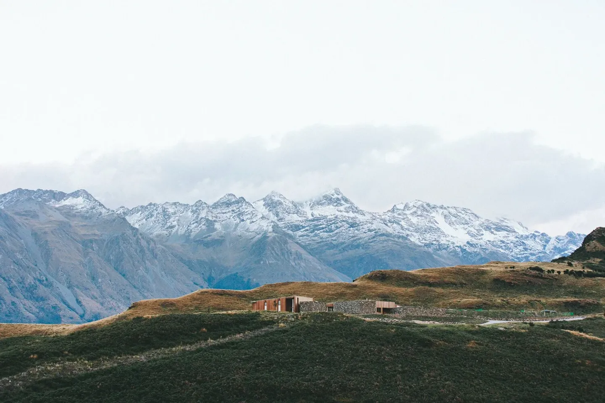

Opportunities for fellowship, spiritual formation and personal growth.
Be renewed by the hope of Jesus.
Grow Together
Faith grows best in community. We offer a variety of programs designed to help every member of the family go deeper in their walk with God.
Bible Study
Adult Sunday School meets every Sunday at 8:15 AM — before the worship service. Led by rotating teachers drawn from our congregation, we study Scripture, explore sermon themes, and apply God's word to daily life.
Children's Church
During the 9:30 AM worship service, children in preschool through grade 5 are invited to Children's Church — an age-appropriate, engaging time of worship, Bible lessons, and activities tailored just for them.
Affinity Groups
Our congregation is home to several member-organized small groups and affinity ministries, including Women of the Word (WOW) and ongoing discussion groups for men, couples, and those navigating life's seasons. Have an idea for a new group? We'd love to hear it.
Adult Sunday School
We gather every Sunday morning at 8:15 AM for Adult Bible Study — a welcoming, open discussion format where people of all backgrounds and experience levels dig into Scripture together.
Topics rotate with the liturgical season, connect with Sunday's sermon, or explore books of the Bible in depth. Whether you're a lifelong churchgoer or exploring Christianity for the first time, you'll find a warm welcome and a thoughtful conversation.
- Every Sunday at 8:15 AM
- Open to all adults — no sign-up needed
- Rotating leaders from our congregation
- Coffee provided (naturally)

Take the next step in faith.
Whatever season of life you're in, there's a place for you to grow here. Come join us.
Plan A Visit